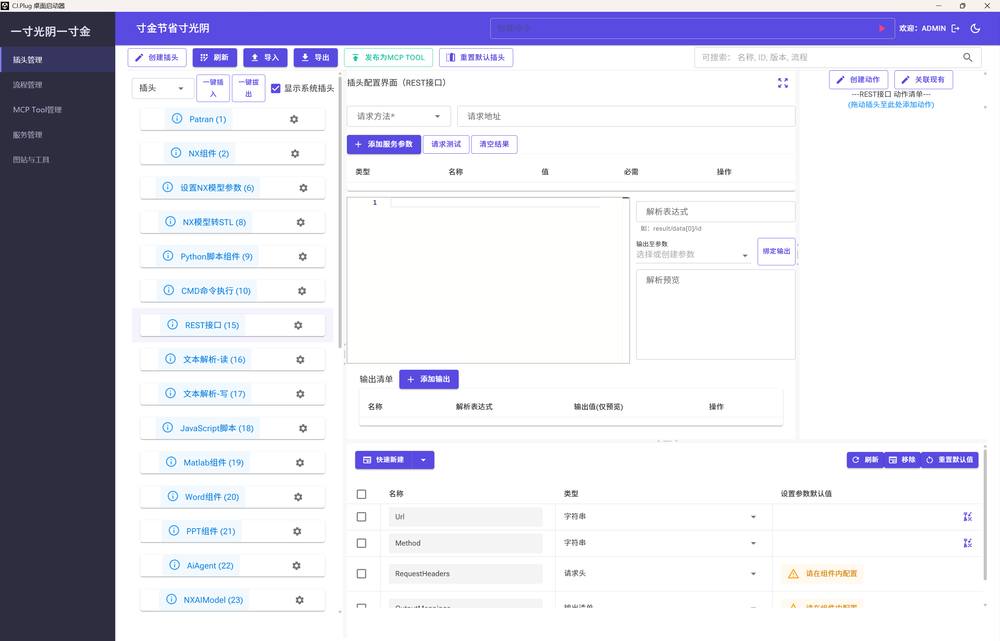
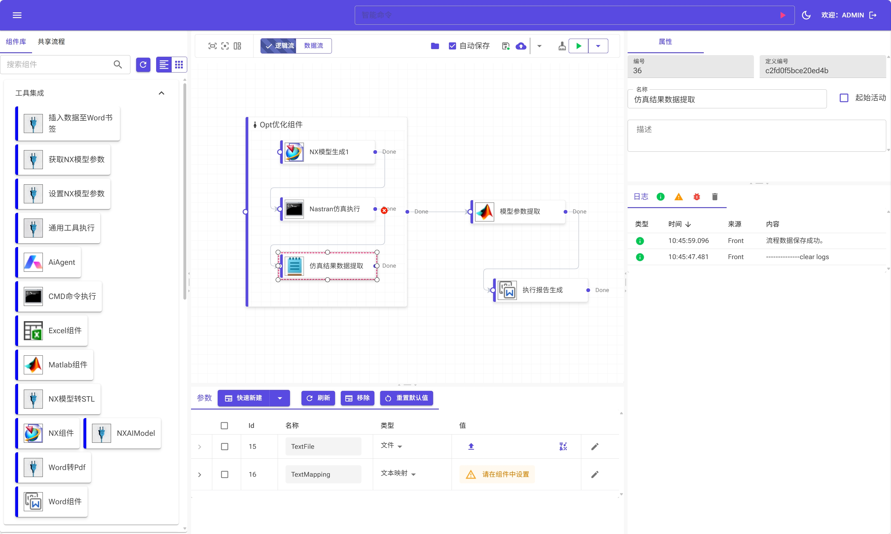
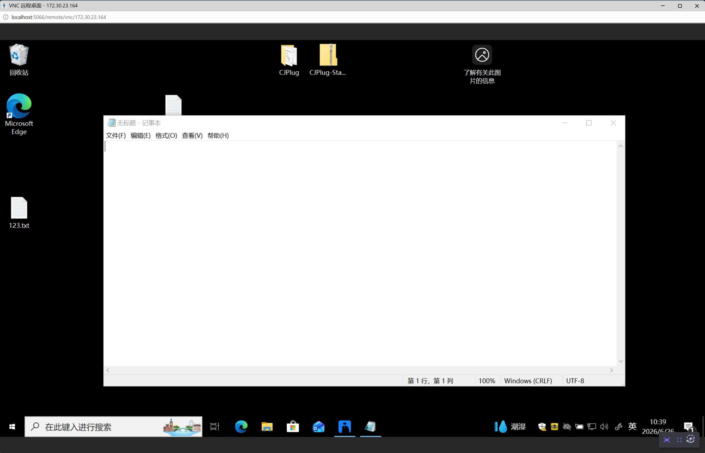
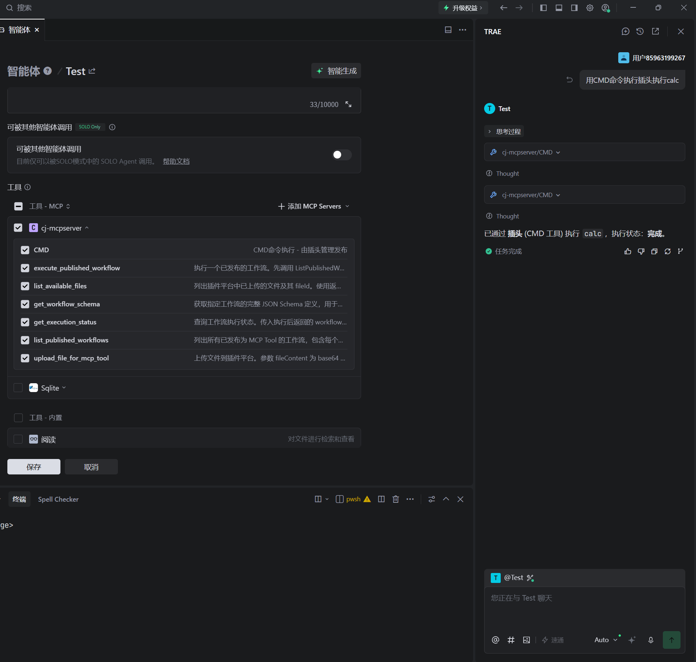

下载、启动，即刻拥有自己的 AI 工具箱
从下载区获取最新试用包，解压到任意目录即可——无需安装、无需配置环境变量，开箱即用。
解压后找到「寸金 - 快捷方式」并双击。工具接入、流程编排、一键发布——所有能力立即可用。
无需改造、无需编码，将任何工具接入 AI，按需串联为智能工作流
桌面应用程序、HTTP API 接口、Python / Bat / PowerShell 脚本——无论你的工具是什么形态，都能在同一平台上完成接入，无需为不同类型学习多套方案。
接入完成后只需一次点击即可发布。AI 端即刻获得该工具的调用能力，无需重启宿主、无需等待部署——真正的所见即所得。
将多个工具拖拽串联为一条完整的执行链路，自由定义执行顺序、条件分支与数据流转。复杂业务逻辑拆解为可复用的工具链，AI 可直接调用整条链路。
无需修改原有工具的任何代码，无需编写适配层或胶水脚本。平台自动解析工具的输入输出，你只需要告诉平台"这个工具能做什么"即可。
工具接入、更新、下线全程热加载，无需重启 AI 应用或宿主服务。修改参数配置后秒级生效，让迭代验证不再等待。
已接入的工具可在团队内共享复用。一次接入、全员受益，逐步沉淀为组织级工具资产。支持导入导出，跨项目迁移零成本。
六大核心能力，覆盖插件开发全生命周期
运行时自动发现并加载程序集，支持 AssemblyLoadContext 隔离，实现真正的热插拔。
深度适配 Microsoft.Extensions.DependencyInjection，插件服务自动注册，无缝融入现有 DI 体系。
每个插件运行在独立的 AssemblyLoadContext 中，互不干扰，卸载时完全释放内存。
内置语义版本检测与兼容性校验，自动处理多版本共存场景，避免运行时冲突。
提供标准化的插件契约接口与事件总线，让独立插件安全、高效地协同工作。
支持插件级别配置文件的实时监控与热重载，无需重启宿主即可生效。
真实项目运行截图，直观感受插件框架的能力




视频演示如何将自定义桌面工具接入 CJ.Plug